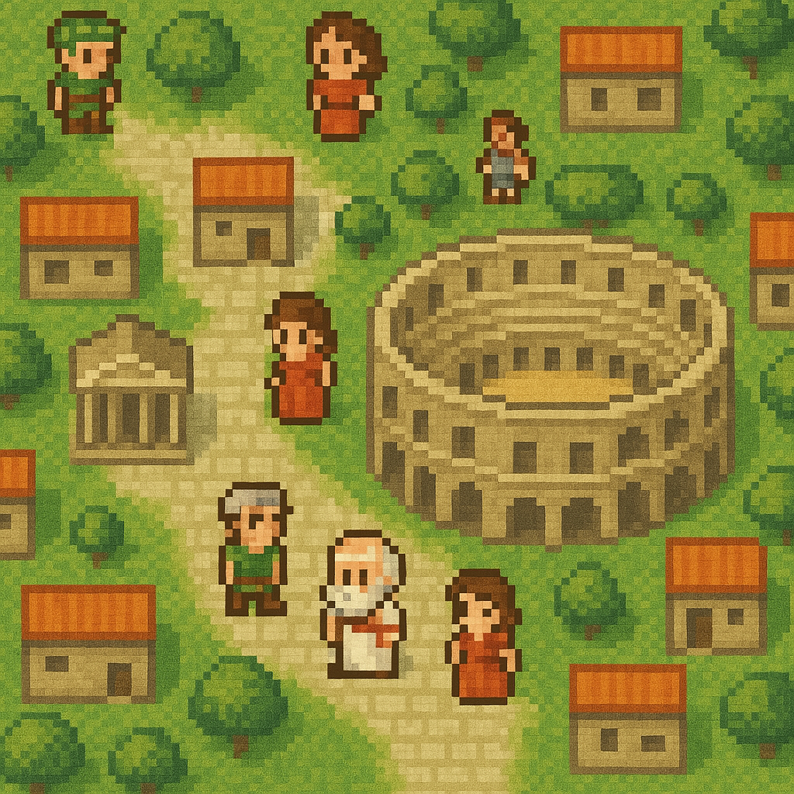

Je suis Adrien Ozon, étudiant en informatique attiré par les systèmes intelligents, les projets utiles et les environnements où la technique produit un impact concret. Mon parcours me mène naturellement vers une carrière en data et en intelligence artificielle.
Étudiant passionné par l'IA, la data et les systèmes intelligents
Étudiant en informatique, futur ingénieur en data/IA
En dernière année de BUT Informatique à l'IUT d'Orsay, je souhaite continuer mon cursus en école d'ingénieur en alternance pour poursuivre ma carrière dans les domaines qui me passionnent.
Recherche d'alternance
Je recherche une alternance de 3 ans en data / IA pour poursuivre mon parcours en école d'ingénieur, avec des candidatures déposées à CentraleSupelec, Télécom Paris, l'INSA Lyon et l'Ensimag.
À propos
Une trajectoire orientée exécution, apprentissage et innovation.
Ce qui me différencie
- Deux stages déjà orientés IA, LLM et DevOps, qui me donnent une première expérience concrète du terrain.
- Un profil académique exigeant, avec CPGE puis BUT Informatique et une place de major de promotion.
- Une veille active sur les outils et workflows IA récents, avec l'habitude de tester rapidement de nouveaux usages.
Parcours
Un socle académique qui converge vers l'intelligence artificielle.
BUT Informatique à l'IUT d'Orsay - Major de promotion
Trois années de BUT marquées par une progression continue et des résultats solides, avec une place de major de promotion. C'est dans ce cadre que j'ai consolidé mes compétences en développement, projets techniques, IA appliquée et travail en équipe.
CPGE MPSI - PSI au Lycée Sainte Marie d'Antony
Formation exigeante qui m'a apporté de solides bases scientifiques, de la rigueur analytique et une vraie capacité à résoudre des problèmes complexes.
Baccalauréat - Mention Bien
Obtenu au Lycée Cours Secondaires d'Orsay, avant de poursuivre en classe préparatoire scientifique.
Expérience
Des immersions progressives dans l'IA appliquée et les environnements de build.
Avril 2025 - Juillet 2025
IA / LLM / Docker
Stage de seconde année
Travail sur des expérimentations autour des LLM avec mise en place d'environnements techniques conteneurisés et manipulation directe des outils de développement.
- Expérimentations autour des LLM et de leurs usages
- Mise en place d'environnements avec Docker, docker-compose et YAML
- Pratique de Python et du terminal dans un cadre projet
Janvier 2026 - Mai 2026
Tuita
Stage de troisième année - Agent IA & DevOps
Participation à un projet d'agent IA dans un environnement plus proche de la production, avec une dimension infrastructure, serveur et cloud.
- Travail autour d'un agent IA et de son environnement d'exécution
- Infrastructure serveur, DevOps et Google Cloud
- Approche plus concrète des contraintes de déploiement
Maintenant
Direction
Suite de parcours : école d'ingénieur en alternance
Je veux poursuivre ma progression dans un cadre exigeant, en alternance, sur des sujets data, IA ou engineering appliqué.
Compétences
Une base évolutive, alignée avec les métiers IA, data et engineering.
Intelligence artificielle
LLM, automatisation intelligente, vision et usages concrets de l'IA.
Data & analyse
Capacité à raisonner de manière structurée, à organiser l'information et à produire des insights utiles.
Environnements techniques
Docker, docker-compose, YAML, terminal, infrastructure serveur, Google Cloud et Django.
Programmation
Python, Java, C++, SQL / PL/SQL, HTML / CSS / PHP et Django pratiqués en projet.
Management & collaboration
Gestion d'équipe au BDE, coordination sur des projets collectifs et sens du collectif.
Langues
Français natif, anglais C1 (TOEIC 860, passé le 8 janvier 2026) et espagnol B2.
Centres d'intérêt
Des centres d'intérêt qui prolongent mon énergie et ma curiosité.
Musique
Pratique de la guitare et du chant.
Sport
Musculation et powerlifting, avec une dimension compétitive.
Développement personnel
Intérêt pour la progression continue, la discipline et l'amélioration de soi.
Finance & IA
Curiosité pour la finance et intérêt soutenu pour l'intelligence artificielle.
Expériences associatives
Des engagements qui prolongent le collectif, la créativité et l'entraide.
2024 - 2025
BDE
Chef de pôle au sein du Bureau des Élèves de l'IUT
Engagement dans la vie étudiante à travers le Bureau des Élèves, avec une dimension d'organisation, de coordination et de management d'équipe dans la dynamique de l'IUT.
- Responsabilités au sein d'une structure étudiante
- Gestion d'une équipe dans le cadre du pôle
- Travail collectif autour de projets et d'événements
- Organisation, coordination et sens de l'engagement
Vie étudiante
Musique
Président du club de Musique de l'IUT
Implication dans le club de musique de l'IUT en tant que président, guitariste et chanteur, dans un cadre collectif et créatif.
- Pratique de la guitare et du chant
- Animation et structuration d'une activité musicale étudiante
- Participation à une activité collective en dehors du cadre académique
- Complément artistique à un parcours technique
Sport
Powerlifting
Compétitions sportives en powerlifting
Pratique compétitive du powerlifting, avec une dimension de discipline, de régularité et de progression.
- Engagement personnel dans une pratique exigeante
- Culture de l'effort, de la constance et du dépassement
- Complément mental et physique à mon parcours académique
Étudiant
Tutorat
Preneur de notes, tutorat étudiant
Engagement dans l'entraide étudiante à travers la prise de notes et le tutorat.
- Soutien à d'autres étudiants dans leur progression
- Transmission, sens du service et rigueur
- Contribution utile à la vie de l'IUT
Été 2023 & 2024
Cap Estérel
Expérience saisonnière - Plagiste
Expérience terrain centrée sur le travail en entreprise, le travail en équipe et la relation client, dans un contexte exigeant et opérationnel.
- Travail en équipe et coordination sur le terrain
- Contact direct avec les clients et sens du service
- Adaptation rapide et gestion des responsabilités au quotidien
Projets
Des projets d'IUT qui mélangent produit, travail d'équipe et ambition technique.
Code public disponible sur GitHub et dépôt du portfolio sur ce repository.
IUT • Cette année
Équipe de 11
Assistant de bridge avec vision par ordinateur et IA
Projet collectif ambitieux autour du jeu de bridge : l'objectif était de concevoir une application capable de capturer les cartes jouées, de les reconnaître via l'image, puis d'apporter une aide intelligente sur les coups et les enchères.
- Reconnaissance d'image pour identifier les cartes jouées sur la table
- Dimension IA appliquée à l'aide à la décision et aux enchères
- Projet de groupe à grande échelle, avec coordination entre 11 étudiants

IUT • Année précédente
Équipe de 4
MathQuest, jeu vidéo éducatif autour des mathématiques
En groupe de 4, nous avons développé un jeu vidéo pédagogique dans lequel le joueur voyage à travers différentes époques pour résoudre des énigmes mathématiques et apprendre en progressant dans l'univers du jeu.
- Conception d'une expérience ludique orientée apprentissage
- Travail sur la narration, la progression et la résolution d'énigmes
- Projet formateur sur la collaboration, le design d'interface et la logique de gameplay
IUT • Année précédente
Binôme
Site web Django de gestion de voyages
Développement d'un site web fonctionnel avec Django et base de données, permettant d'enregistrer, de créer et d'annuler des voyages selon différents rôles utilisateurs.
- Gestion de rôles distincts : client, administrateur et superuser
- Création, enregistrement et annulation de voyages
- Développement full-stack autour de Django et d'une base de données
2023 - 2025
IUT
Autres projets techniques menés à l'IUT
Au fil du BUT, j'ai aussi travaillé sur un ensemble de projets techniques qui ont renforcé ma polyvalence en développement, systèmes, bases de données et réseau.
- Développement d'un OS sur Raspberry Pi
- Reconnaissance vidéo avec IA
- Programmation en C++ et Java
- Création de sites internet avec CSS, HTML et PHP
- Gestion de bases de données avec SQL et PL/SQL
- Configuration de réseaux : DHCP, SSH, pare-feu et routage
- Développement d'applications avec Java, C++, Python et Django
- Management de projet et management d'équipe
Contact